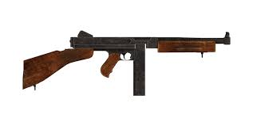

Items
.jpg) There are many different items in Days Gone. Some consumables and throwables are significantly better than others. If you lack plenty of crafting components often, you should prioritize saving those items that best aid your gameplay style. Some of the most important items are Molotov Cocktail, Bandage, Focus Cocktail, Health Cocktail and Stamina Cocktail.
There are many different items in Days Gone. Some consumables and throwables are significantly better than others. If you lack plenty of crafting components often, you should prioritize saving those items that best aid your gameplay style. Some of the most important items are Molotov Cocktail, Bandage, Focus Cocktail, Health Cocktail and Stamina Cocktail.
Weapons
There are many weapons to chose from in Days Gone. Here are some of the best ones. .jpg)
.jpg)
A lot of Days Gone pits the player against numerous enemies at once, but there are moments where a single shot weapon like this are much better to have around. This sniper rifle won't be much help against a group of Freakers, but any bosses that the player has to take out can be easily dispatched with this rifle. Sadly, this gun won't be available to the player till the late game, but even then it can help with some seriously difficult situations.
Styled on the famous Tommy Gun, this is the best weapon that a player can get in Days Gone. This weapon can kill enemies with a single bullet. With a capacity of 55 and firing at the rate of any normal submachine gun, this can put down a lot of Freakers in a short period of time. Throw in the fact that the player can upgrade their bike to hold saddlebags, increasing the amount of ammo they can take into the world with them, and there's no reason why this shouldn't be at the top of the list. It can be bought much later into the game.